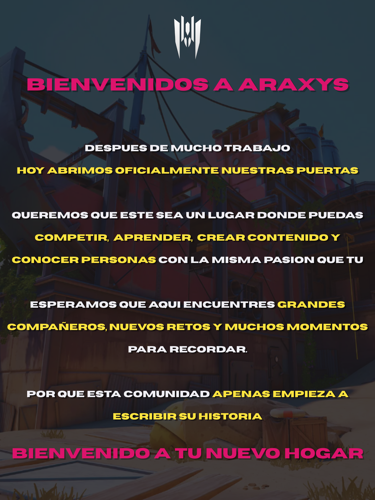

Despues de meses de planificacion y desarrollo, Araxys Esports anuncia oficialmente la apertura de su comunidad, un proyecto creado con el objetivo de reunir a jugadores en un espacio donde puedan competir junto a una organizacion bien estructurada.
Nacimos con la intencion de convertirnos en un punto de encuentro para toda la comunidad. Desde jugadores que buscan mejorar su nivel competitivo hasta streamers, coaches, casters y cualquiera que este interesado en formar parte del proyecto, buscamos ofrecer oportunidades para todos aquellos que quieran aportar y desarrollarse dentro de todo el mundo de los esports.
Durante esta primera etapa se pondran en marcha diferentes iniciativas enfocadas en fortalecer la comunidad, incluyendo:
- Reclutamiento de jugadores para los distintos equipos.
- Apertura de la seccion Academy para entrenamientos y practicas.
- Incorporacion de creadores de contenido y streamers.
- Busqueda de coach, casters y miembros para staff.
- Organizacion de torneos y eventos para la comunidad.
Uno de los principales objetivos de Araxys sera crear un entorno donde la competencia vaya de la mano con el crecimiento individual y colectivo, fomentando un ambiente en el que tanto nuevos jugadores como los mas experimentados puedan encontrar un lugar para seguir mejorando.
El lanzamiento de la organizacion representa unicamente el comienzo de un proyecto con planes a largo plazo. Conforme la comunidad continue creciendo, tambien lo haran las actividades, los equipos, los torneos y las oportunidades para todos sus miembros.
Con esta apertura, Araxys inicia oficialmente una nueva etapa e invita a cualquier persona interesada en formar parte de la comunidad a unirse y construir juntos el futuro del proyecto.
¿Que sigue?
En las proximas semanas se abriran las postulaciones para jugadores, coach, streamers, casters y staff, ademas de anunciarse los primeros torneos y actividades oficiales de la comunidad.